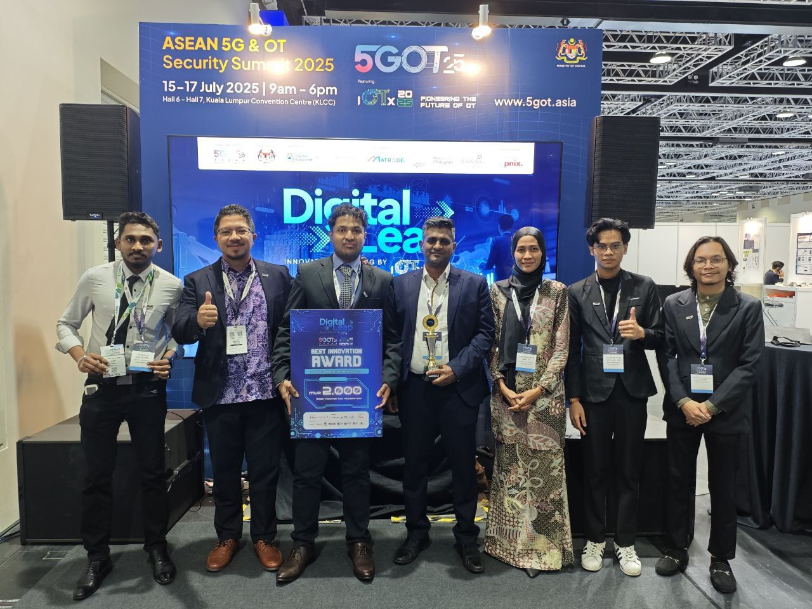
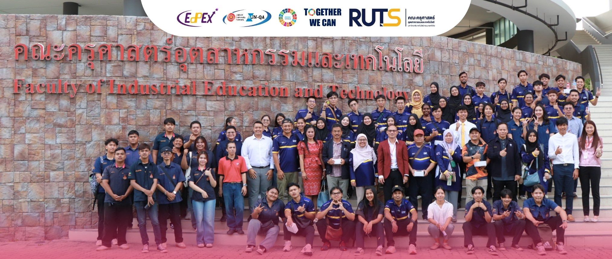
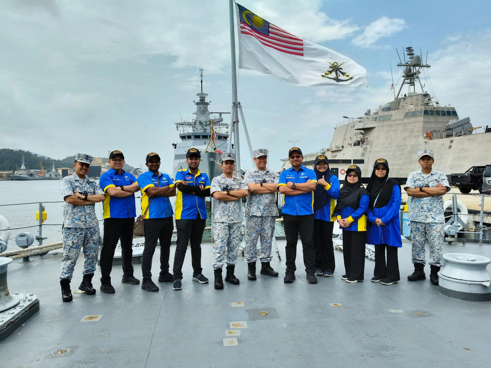
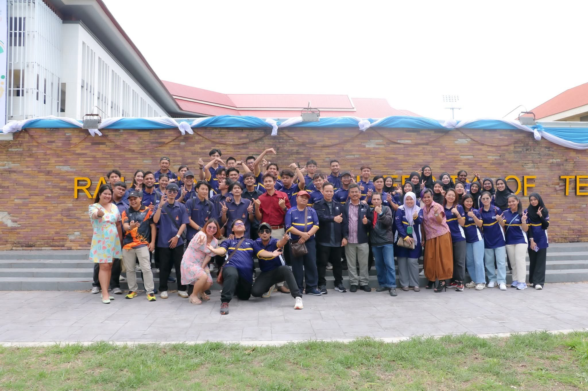
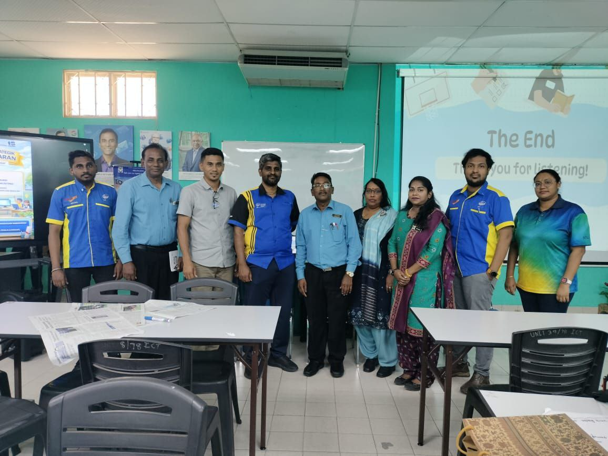
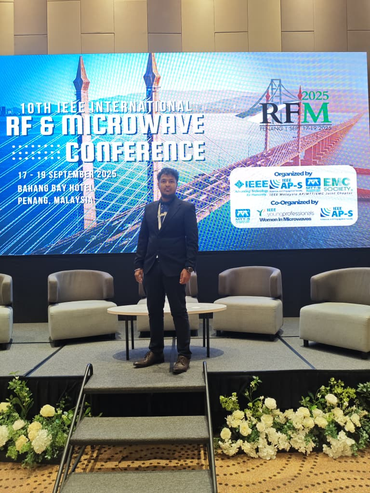

Shanmuka Rooban Gunasekaran
Doctoral Researcher | RF Design Engineer | Electromancer







Bio-Statement
SHANMUKA ROOBAN GUNASEKARAN (Graduate Student Member, IEEE) received the B.Eng. (Hons.) and M.Sc. degrees in communication engineering from Universiti Malaysia Perlis (UniMAP), Malaysia, in 2020 and 2024, respectively, where he is currently pursuing the Ph.D. degree in communication engineering. His research interests include reconfigurable antennas, metamaterials, dielectric resonator antennas, microwave sensing for agricultural applications, and artificial intelligence for quality detection. He has authored or coauthored several journal and international conference papers in these areas. Mr. Gunasekaran has served as the Chair of the IEEE UniMAP Student Branch since 2022 and is actively involved in professional and student activities. His honors include the IEEE Malaysia AP/MTT/EMC Joint Chapter Outstanding Master Thesis Award in 2024 and the IEEE Malaysia Student Volunteer Award in 2024 and 2025. He also received the Gold Award for Best Innovation at the Digital Leap Innovation Pitching 2025 for his work on secure and reconfigurable antenna technologies. The event was held in conjunction with the ASEAN 5G & Operational Technology (5GOT) Security Summit 2025, organized by Digital Nasional Berhad and CyberSecurity Malaysia, and powered by the Ministry of Digital Malaysia. Most recently, he received a Gold Medal at the FutureX Young Future Leader 2026 Postgraduate Colloquium and Research Exhibition for his work on microwave sensing for agricultural applications.
🎓 Academic Qualifications
- PhD in Communication Engineering
University Malaysia Perlis (2024-Present) - M.Sc. in Communication Engineering
University Malaysia Perlis (2020-2024) - B.Eng (Hons) Communication Engineering
University Malaysia Perlis (2017-2020) - Diploma in Electronic Engineering
Polytechnic Sultan Abdul Aziz Shah (2014-2017)
🤝 Professional Membership
- Board of Engineers Malaysia (BEM): Graduate Engineer (Reg: G1234999A)
- MBOT: Graduate Technologist (Reg: GT24020628)
- IEM: Student Member (No: 117429)
- IEEE: Graduate Student Member & Young Professional
⚔️ Working Experience
RF Design Engineer
Auto Antenna Manufacturer Sdn Bhd (Mar 2023 - Dec 2023)
Antenna testing and measuring,Anechoic Chamber,PCB testing, Soldering ,Well versed with Network Analyzer, Spectrum Analyzer, Signal generator, Power suppy, Audio analyzer & Calibration, AM, FM, DAB,GNSS,Amplifier
Tier-1 Support Engineer
Huacomm Telecommunications (2019 - 2020)
Monitor hotel room’s AP ,Monitor guest’s activities ,Upload advertisement on TV for hotels, Set Setup Box (STB),Create tickets for each case for future follow up
Tier-2 Support Engineer
Huacomm Telecommunications (2016 - 2017)
Troubleshoot problems regarding internet,Troubleshoot problems regarding IPTV ,LAN cable set up for function rooms, Daily Report
🦁 Leadership & Involvement
- Chair: IEEE UniMAP Student Branch (2022-Present)
- Vice President: Robotic Club Polytechnic Shah Alam (2015-2017)
- Vice President: PRS of SMK Seri Tanjong (2011-2013)
📚 Publications
- 1. Smart IoT-Based Water Quality Monitoring System for Catfish Aquaculture with AI-Assisted Decision Support
MH Mat, M Jusoh, I Ismail, NFM Nasir, SR Gunasekaran, M Othman...
2026 IEEE International Conference on Electrical, Electronic and Computer...
doi: 10.1109/ICEECE71300.2026.11710057 - 2. IoT-Based Smart Cool Fridge System with GPS Localization Using ESP32 Controller For The Frozen Food Industry
N Khan, T Sabapathy, SR Gunasekaran, M Jusoh, I Ismail, I Adam...
2026 IEEE International Conference on Electrical, Electronic and Computer...
doi: 10.1109/RFM67034.2025.11284342 - 3. Design and Analysis of Tetradecagonal Shaped CSRR Based Tunable Metamaterial Unit Cell
MIA Muhammad Azri Aiman Azahari, Shanmuka Rooban Gunasekaran, Muzammil Jusoh...
2026 Symposium on Microwave, Antenna, and Propagation (SMAP)
doi: 10.1109/SMAP67528.2026.11439182 - 4. Reflection-Phase-Optimized Artificial Electromagnetic Surface Superstrate for Antenna Gain Enhancement
SR Gunasekaran, T Sabapathy, M Jusoh, MN Osman, MZ Ahmad...
2026 15th International Conference on Communications, Circuits and Systems...
doi: 10.1109/ICCCAS70754.2026.11672542 - 5. Design of a Compact Multi-Band Circularly Polarized Antenna for Tracking and Localization Applications
SR Gunasekaran, NM Saaid, T Sabapathy, M Jusoh, MN Osman...
International Journal of Information System and Innovative Technology 5 (1)...
doi: 10.63322/mje6dj25 - 6. Design and Characterization of Wearable Textile UWB Antenna for Microwave Imaging Application
SR Gunasekaran, M Jusoh, I Adam, MF Zambak, NF Mohd Nasir, C Seker...
Computer and Electrical Engineering, 38-43 (2026)
doi: 10.3233/ATDE260645 - 7. Combined CNN Based Computer Imaging and Electromagnetic Sensing Analysis for Mango Quality Detection
SR Gunasekaran, T Sabapathy, HAM Abdullah, JS Altamimi, MZ Ahmad...
Advances in Artificial Intelligence and Electronic Design Technologies. ICED 2024. Springer, Cham.
doi: 10.1007/978-3-031-78918-2_31 - 8. Analysis of Dielectric Resonator Antenna (DRA) Using Machine Learning Optimization Approach
DA Agastin, MN Osman, V Vijean, SR Gunasekaran, SDA Rihan...
Advances in Artificial Intelligence and Electronic Design Technologies. ICED 2024. Springer, Cham.
doi: 10.1007/978-3-031-78918-2_29 - 9. Directional of Arrival (DOA) Estimation Using Reconfigurable Metasurface for RIS Communication
SRG Nur Hasni Marzuki, Muzammil Jusoh, Thennarasan Sabapathy, Muhammad Fitra...
2025 IEEE International RF and Microwave Conference (RFM)
doi: 10.1109/RFM67034.2025.11284337 - 10. Reconfigurable Dual Band Antenna using Varactor Diode
Int. J. Inf. Syst. Innovative Technol., vol. 4, no. 2, pp. 11-18, Dec. 2025
doi: 10.63322/lepsgh59 - 11. Dipole Antenna Radiation Pattern Optimization Using Parasitic Element Size and Location
Int. J. Inf. Syst. Innovative Technol., vol. 4, no. 2, pp. 23-29, Dec. 2025
doi: 10.63322/y85amh14 - 12. Frequency Reconfigurable Wearable Antenna Using Varactor Diode
V Thambiraja, SR Gunasekaran, T Sabapathy, M Jusoh, MI Jais, P Ehkan
2024 International Conference on Innovative Computing, Intelligent Communication and Smart Electrical Systems (ICSES)
doi: 10.1109/ICSES63760.2024.10910841 - 13. Gain Enhancement of Dual-Band Patch Antenna using EBG Array
A Alsayaghi, T Sabapathy, SR Gunasekaran, M Jusoh, MN Osman...
2024 International Conference on Innovative Computing, Intelligent Communication and Smart Electrical Systems (ICSES)
doi: 10.1109/ICSES63760.2024.10910353 - 14. Gain enhancement of rectangular dielectric resonator antenna using air gap
SR Gunasekaran, T Sabapathy, M Jusoh, RB Ahmad, MN Osman...
AIP Conference Proceedings 2579 (1), 020019 (2023)
doi: 10.1063/5.0167747 - 15. Frequency and Pattern Reconfigurable Dielectric Resonator Antenna Array
SR Gunasekaran
Faculty of Electronic Engineering & Technology, Universiti Malaysia Perlis (2023) - 16. Frequency reconfigurable DRA using RF switch loaded feedline for 5G NR band n48, n77 and n78
SR Gunasekaran, T Sabapathy, M Jusoh, RB Ahmad, NF Kahar...
2022 IEEE Delhi Section Conference (DELCON), 1-6
doi: 10.1109/DELCON54057.2022.9753464
©️ Copyright & Patents
- Fuzzy-Based Angle-of-Arrival Estimation System
MyIPO No: LY2025P04446 - Multi-Mode Yagi Uda Patch Array Antenna
MyIPO No: LY2025P04445
🏆 Awards
- Gold & Best Innovation Award: Digital Leap Innovation Pitching 2025 (CyberSecDRA)
- Outstanding Master Thesis Award: IEEE Malaysia AP/MTT/EMC (2024)
- Best IEEE Volunteer Award: IEEE Malaysia (2024 and 2025)
- Gold Award for Invention: X-CIPTA 2025
- Gold Medal for Invention and Research: FutureX Young Future Leader 2026 Postgraduate Colloquium and Research Exhibition
🌱 Mentorship (Coach)
Penang State Level Junior Innovate Maker Fair (Chumbaka)
Silver Medal-Students: Jacira Ann Peter John & Vishnuram Thennarasan (SJK Tamil Kangar)
Successfully mentored and coached the primary school team through a highly competitive field of over 100 participating schools. Guided the students to the top 84 grand finale, ultimately securing the Silver Medal.
🌍 International Committees & Engagements
Program Leadership & Mobility
- Program Leader: Mobility Program to NAHDA University in BENI SUEF (NUB), Egypt (Nov 2025)
- Visiting Scholar: Vel Tech Rangarajan Dr. Sagunthala R&D Institute of Science and Technology (VELTECH), India (April 2025)
- Program Leader: Engineering Camp UniMAP-RUTS (2024) and Smart Farm Camp at Ratthaphum College, Thailand (2024)
- Logistics Coordinator: Internship program for students from VELTECH University, India at UniMAP (Nov 2025 - Feb 2026)
- Committee Member: Mobility Program to Faculty of Industrial Education & Technology, RUTS, Thailand (2023)
🎤 Conferences & Physical Events
- Logistics Head: 7th International Conference on Electronic Design (ICED) 2024
- Committee Member, EMCEE & Logistics: 10th IEEE International RF and Microwave Conference (RFM) 2025
- Committee Member & EMCEE: IEEE Asia-Pacific Conference on Applied Electromagnetics (APACE) 2024
- Committee Member & EMCEE: Malaysia-Japan Workshop on Radio Technology (MJWRT) 2024
- Committee Member & EMCEE: Official visit from VELTECH INDIA's Vice Chancellor and Dean of International Relations
- Committee Member: Smart Farm Camp UniMAP-RUTS (2025)
- Logistics head: DR. P. Kalpana Devi Visiting Professor from VELTECH for a technical talk (2025)
- Logistics head: DR. Ramesh Deshpande Visiting Professor from B V Raju Institute of Technology for a technical talk (2026)
💻 Virtual Engagements & Webinars
- Keynote Speaker, Workshop Lead & Panelist: IEEE Region 10 Young Professionals UpSkill Malaysia 2021
- Moderator: Over 8+ sessions for the 2021 and 2022 IEEE Malaysia AP/MTT/EMC Joint Chapter Webinar Series
- Moderator: "SEE THE UNREAL: A Virtual Talk on Virtual Reality" conducted by IEEE SB AWH EC (2021)
- Moderator: Publishing Letters / Short Papers in IEEE Journals Workshop (2021)
🦅 Contact the Wizard
Ready to conjure something amazing?
Location: Just whisper my name, I will be there